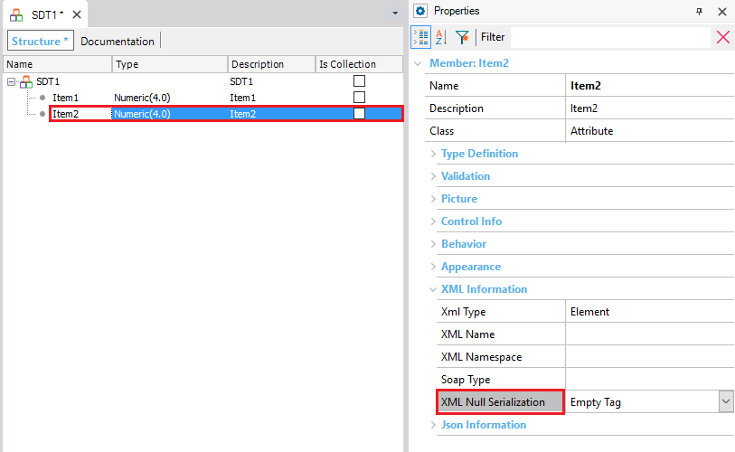
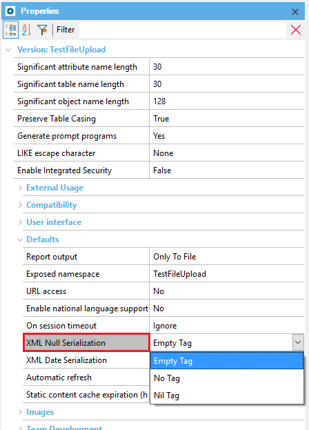

| Empty Tag | The item is always serialized. This is the default value. |
| Nil Tag | The item is serialized using the nil tag. |
| No Tag | The item is not serialized when it has no value. |
This property is located at SDT\ItemName\Properties\Xml information section\Xmltype.

It is also available at Version level, under the Defaults section:

The Nil Tag value and the property at Version level are available as from GeneXus X Evolution 2 Upgrade 2.
Consider the following Structured Data Type:
SDT1
-------
Item1 Num(4)
Item2 Char(20)
Which is populated through the following code:
SDT1
{
item1 = 1
}
When the Item2 XML serialize property value is set = "Empty Tag", the default value, the SDT XML representation will be as follows:
<SDT1 xmlns="Knowledge Base" > <item1>1</item1> <item2/> </SDT1>
When the Item2 XML Serialize property value is set = "No Tag", the SDT XML representation will be as follows:
<SDT1 xmlns="Knowledge Base" > <item1>1</item1> </SDT1>
When the Item2 XML Serialize property value is set = "Nil Tag", the SDT XML representation will be as follows:
<SDT1 xmlns="Knowledge Base" > <item1>1</item1> <item2 xsi:nil='true'></item2> </SDT1>
Where the xsi prefix is a namespace located at http://www.w3.org/2001/XMLSchema-instance
To apply the corresponding changes when the property value is configured, rebuild all the Structured Data Type (SDT) objects.
Xml Information Properties (SDT)
XML Name property (SDT)
XML Namespace property (SDT)
Xml SoapType property (SDT)
| Backlinks | ||
| Json Null Serialization property | XML Name property (SDT) | |
| XML Namespace property (SDT) | Xml SoapType property (SDT) | Xml Type property (SDT) |